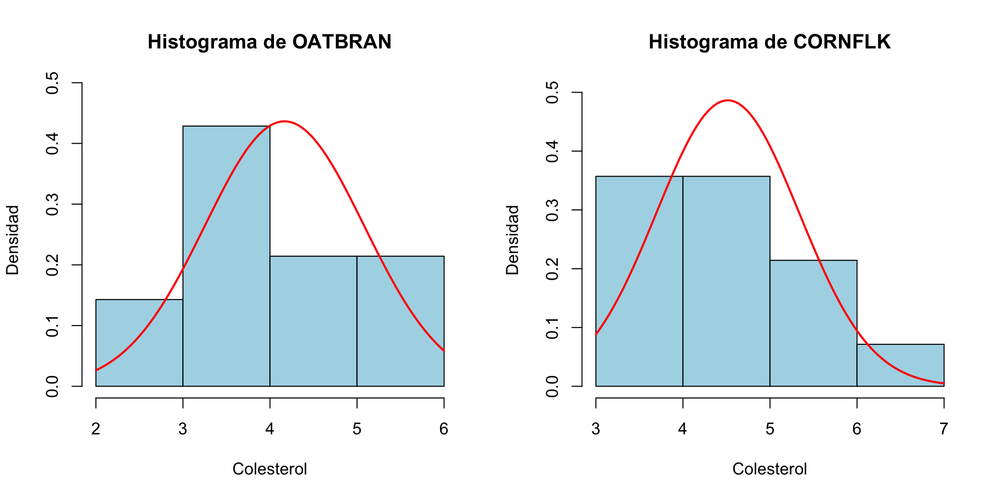
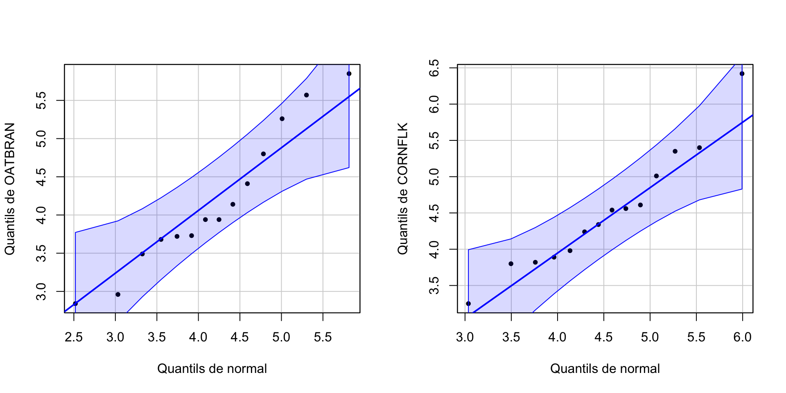

Lección 15 Contrastes de hipótesis uni- y biparamétricos
En esta lección simplemente vamos a comentar por encima los contrastes de hipótesis más importantes sobre:
Una o dos medias
Dos varianzas
Una o dos proporciones
15.1 Contrastes para medias
15.1.1 Test t para una media
Sea \(X\) una variable aleatoria de media \(\mu\). Queremos realizar un contraste \[ \left\{\begin{array}{l} H_{0}:\mu=\mu_0\\ H_{1}:\mu \neq\mu_0\text{ o }\mu >\mu_0\text{ o }\mu<\mu_0 \end{array} \right. \] Para ello, medimos \(X\) sobre una muestra aleatoria simple de tamaño \(n\) de sujetos de la población.
Supongamos que estamos en una de las dos situaciones siguientes:
\(X\) es normal
\(X\) no es normal pero el tamaño \(n\) de la muestra que tomamos es grande (digamos, para fijar ideas, que \(n\geq 40\))
En cualquiera de estas dos situaciones, podemos usar el test t que hemos explicado en la lección anterior para realizar el contraste. Recordad que este test se basa en el estadístico de contraste \[ T= \frac{\overline{X}-\mu_{0}}{{\widetilde{S}_X}/{\sqrt{n}}} \] que, bajo las condiciones supuestas, sigue (aproximadamente, si \(X\) no es normal pero la muestra es grande) una distribución t de Student con \(n-1\) grados de libertad. Como ya hemos hecho varios ejemplos de este tipo de test en la lección anterior, aquí no nos vamos a entretener más con él.
15.1.2 Tests t para dos medias
Sean ahora \(X_1\) y \(X_2\) dos variables aleatorias de medias \(\mu_1\) y \(\mu_2\), respectivamente. Queremos realizar un contraste \[ \left\{\begin{array}{l} H_{0}:\mu_1=\mu_2\\ H_{1}:\mu_1 \neq\mu_2\text{ o }\mu_1 >\mu_2\text{ o }\mu_1<\mu_2 \end{array} \right. \] Para ello, medimos \(X_1\) sobre una muestra aleatoria simple de tamaño \(n_1\), y \(X_2\) sobre una muestra aleatoria simple de tamaño \(n_2\).
Supongamos que estamos en una de las dos situaciones siguientes:
\(X_1,X_2\) son ambas normales
\(X_1,X_2\) no son ambas normales pero los tamaños \(n_1,n_2\) de las muestras son ambos grandes (digamos, para fijar ideas, que \(n_1,n_2\geq 40\))
Si se cumple alguna de estas dos condiciones, podemos usar un test t, basado en un estadístico de contraste \(T\) adecuado que sigue una ley t de Student (aproximadamente, si alguna variable poblacional no es normal pero las dos muestras son grandes). El estadístico de contraste concreto y los grados de libertad de su distribución t de Student dependen de las mismas condiciones que comentábamos al hablar de intervalos de confianza para la diferencia de dos medias:
De si las dos muestras son:
- independientes: hemos medido \(X_1\) y \(X_2\) sobre dos muestras aleatorias simples obtenidas de manera independiente la una de la otra; o
- emparejadas: hemos medido \(X_1\) y \(X_2\) sobre los individuos de una misma muestra aleatoria simple o hay un emparejamiento natural entre los sujetos de las dos muestras; en particular, en el caso emparejado ha de pasar que \(n_1=n_2\).
Cuando las muestras son independientes, también dependen de si \(X_1\) y \(X_2\) tienen la misma varianza o no, que se ha de decidir con otro contraste.
A continuación os damos las fórmulas, por si tenéis que realizar algún contraste de dos medias “a mano”.
Cuando las muestras son emparejadas, podemos entender que tenemos una sola muestra (formada por las parejas de sujetos) y consideramos los pares de valores \((X_1,X_2)\) sobre dichas parejas. Entonces, podemos medir para cada pareja la diferencia \(D=X_1-X_2\), que tendrá media poblacional \(\mu_D=\mu_1-\mu_2\), y traducir el contraste \[ \left\{\begin{array}{l} H_{0}:\mu_1=\mu_2\\ H_{1}:\mu_1 \neq\mu_2\text{ o }\mu_1 >\mu_2\text{ o }\mu_1<\mu_2 \end{array} \right. \] en el contraste de una sola media \[ \left\{\begin{array}{l} H_{0}:\mu_1-\mu_2=0\\ H_{1}:\mu_D \neq 0\text{ o }\mu_D >0\text{ o }\mu_D<0 \end{array} \right. \] Es decir, cuando las muestras son emparejadas, consideramos nuestro contraste de dos medias como un contraste de una sola media, usando como muestra las diferencias \(X_1-X_2\) sobre nuestras parejas de sujetos. Por lo tanto, si llamamos \(\overline{D}\) a la media muestral de \(D\) y \(\widetilde{S}_D\) a la desviación típica muestral de \(D\) sobre nuestra muestra de parejas, y \(n\) es el tamaño de la muestra de parejas, el estadístico de contraste es \[ T=\frac{\overline{D}}{\widetilde{S}_D/\sqrt{n}} \] que, cuando \(\mu_D=0\), tiene (aproximadamente, si \(X_1,X_2\) no son normales pero la \(n\) es grande) distribución \(t_{n-1}\).
Supongamos ahora que las dos muestras son independientes. Sean \(\overline{X}_1\) y \(\widetilde{S}^2_1\) la media muestral y la varianza muestral de la muestra de \(X_1\) y \(\overline{X}_2\) y \(\widetilde{S}^2_2\) la media muestral y la varianza muestral de la muestra de \(X_2\). Sean, además, \(\sigma_1^2\) y \(\sigma_2^2\) las varianzas (poblacionales) de \(X_1\) y \(X_2\). Entonces:
Si \(\sigma_1^2=\sigma_2^2\), el estadístico de contraste es \[ T=\frac{\overline{X}_1-\overline{X}_2}{\sqrt{(\frac{1}{n_1}+\frac{1}{n_2})\cdot \frac{(n_1-1)\widetilde{S}_1^2+(n_2-1)\widetilde{S}_2^2}{n_1+n_2-2}}} \] que, cuando \(\mu_1=\mu_2\), tiene distribución (aproximadamente, si \(X_1,X_2\) no son normales pero \(n_1\) y \(n_2\) son ambas grandes) \(t_{n_1+n_2-2}\).
Si \(\sigma_1^2\neq \sigma_2^2\), el estadístico de contraste es \[ T=\frac{\overline{X}_1-\overline{X}_2}{\sqrt{\frac{\widetilde{S}_1^2}{n_1}+\frac{\widetilde{S}_2^2}{n_2}}} \] que, cuando \(\mu_1=\mu_2\), tiene distribución (aproximadamente, si \(X_1,X_2\) no son normales pero \(n_1\) y \(n_2\) son ambas grandes) \(t_{\nu}\) con \[ \nu=\frac{\displaystyle \left( \frac{\widetilde{S}_1^2}{n_1}+\frac{\widetilde{S}_2^2}{n_2} \right)^2}{\displaystyle \frac{1}{n_1-1}\left(\frac{\widetilde{S}_1^2}{n_1}\right)^2+\frac{1}{n_2-1}\left(\frac{\widetilde{S}_2^2}{n_2}\right)^2} \]
Los grados de libertad de la distribución t de Student usada en un contraste sobre dos muestras de tamaño \(n\):
Si las muestras son independientes, es aproximadamente \(2(n-1)\)
Si las muestras están emparejadas, es \(n-1\)
Esto hace que la probabilidad de error de tipo I de un contraste con muestras emparejadas de tamaño \(n\) suela ser más pequeña que la de un contraste con dos muestras independientes de tamaño \(n\). Por ejemplo, supongamos que queremos realizar el contraste \[ \left\{ \begin{array}{l} H_0: \mu_1=\mu_2\\ H_1: \mu_1>\mu_2 \end{array}\right. \] y que el estadístico del contraste \(T\) sobre dos muestras de tamaños \(n_1=n_2=20\) da 1.7.
Si las muestras son independientes, \[ \text{p-valor}=P(T>1.7)\approx `1-pt(1.7,38)}=0.0487 \]
Si las muestras son emparejadas, \[ \text{p-valor}=P(T>1.7)=`1-pt(1.7,19)}=0.0527 \]
Por lo tanto, con nivel de significación \(\alpha=0.05\), rechazaríamos la hipótesis nula con las muestras independientes y la aceptaríamos con las muestras emparejadas.
A consecuencia de la diferencia en los números de grados de libertad de la distribución del estadístico de contraste, en general los contrastes con muestras emparejadas permiten usar menos sujetos.
Todos estos tests t están implementados en la función t.test de R. Su argumento es:
Una muestra de \(X\) y el valor con el que queremos contrastar \(\mu\), o
una muestra de \(X_1\) y una muestra de \(X_2\).El tipo de contraste, que se especifica igualando el parámetro
alternativea"two.sided"(para contrastes bilaterales, es decir, con \(\neq\)),"less"(\(<\)) o"greater"(\(>\)); no os olvidéis de las comillas en los valores de este parámetro.El tipo de muestras, que se especifica igualando el parámetro
pairedaFALSEsi son independientes o aTRUEsi son emparejadas.En caso de muestras independientes, si las varianzas son iguales o diferentes, que se especifica igualando el parámetro
var.equalaTRUEo aFALSE.El nivel de confianza \(1-\alpha\), que se especifica con el parámetro
conf.level; si el nivel de significación es \(\alpha=0.05\), es decir, el nivel de confianza 0.95, no hace falta especificarlo (es su valor por defecto).
15.1.3 Tests no paramétricos
Si las variables aleatorias de interés no son (aproximadamente) normales y alguna muestra es pequeña, no podemos usar un test t. Entonces, hay que usar algún test no paramétrico que no presuponga nada sobre las distribuciones de las variables aleatorias.
Para contrastes de medias, los recomendados son:
Test de Wilcoxon para una media o para dos medias usando muestras emparejadas (que, recordad, se traduce en un contraste sobre la media de las diferencias).
Test de Mann-Whitney(-Wilcoxon) para dos medias usando muestras independientes.
Ambos se calculan con R con la función wilcox.test, con una sintaxis idéntica a la de t.test (excepto que no dispone del parámetro var.equal ya que ahora no nos interesa lo más mínimo saber si las variables tienen varianzas iguales o diferentes en el caso de contrastes de dos medias con muestras independientes).
Usad tests paramétricos siempre que podáis, pero solo cuando podáis:
Los mejores tests no paramétricos suelen tener potencia inferior a los mejores tests paramétricos.
Los tests no paramétricos no suelen producir intervalos de confianza, solo p-valores.
Pero usar, por ejemplo, un test t cuando no toca, porque alguna variable no sea normal y alguna muestra sea pequeña, puede llevar a conclusiones equivocadas.
Típca pregunta de MIR (esta, de 2017):
El grosor del pliegue subcutáneo de grasa a nivel del tríceps se utiliza a veces para evaluar la cantidad de grasa corporal. Esta variable no se distribuye normalmente en las poblaciones. Queremos comparar el valor medio de esta variable en dos poblaciones que suponemos presentan distinta condición nutricional. La prueba estadística más adecuada para contrastar la hipótesis es:
- La prueba de Mann-Whitney.
- La prueba t de Student.
- El cálculo del coeficiente de correlación de Pearson.
- La prueba F de Snedecor.
15.1.4 Ejemplos
Ejemplo 15.1 La temperatura media del cuerpo humano, ¿es el valor comúnmente aceptado de 37o C?
Primero de todo, traducimos esta pregunta en un contraste de hipótesis:
Variable aleatoria poblacional: \(X\): temperatura del cuerpo humano en oC, de media \(\mu\)
Contraste: \[ \left\{\begin{array}{l} H_{0}:\mu=37\\ H_{1}:\mu\neq 37 \end{array}\right. \]
Necesitamos una muestra de temperaturas. Vamos a usar las recogidas por P.A. Mackowiak, S. S. Wasserman y M.M. Levine que ya usamos en el Ejemplo 13.9, y que tenemos guardadas (en grados C) en la variable Temperatura de la tabla de datos Temperaturas.txt.
El código siguiente define un vector llamado Temps con estas temperaturas y calcula su tamaño (la función str(Temperaturas) nos muestra la estructura de la tabla de datos Temperaturas que hemos definido al importar el fichero Temperaturas.txt):
## 'data.frame': 230 obs. of 3 variables:
## $ Sexo : chr "M" "M" "M" "F" ...
## $ Pulsaciones: int 69 72 68 75 68 79 71 73 77 81 ...
## $ Temperatura: num 36.1 37.1 35.7 36.6 37.1 38.5 36.6 36.3 37.3 37.3 ...## [1] 230Como la muestra es muy grande, podemos usar un test t:
##
## One Sample t-test
##
## data: Temps
## t = -5.7104, df = 229, p-value = 3.479e-08
## alternative hypothesis: true mean is not equal to 37
## 95 percent confidence interval:
## 36.76549 36.88581
## sample estimates:
## mean of x
## 36.82565El resultado contiene:
- El p-valor (
p-value) del contraste: 3.5·10-8, muy pequeño - El intervalo de confianza del 95% (
95 percent confidence interval): va de 36.76549o C a 36.88581o C - La media muestral (
mean of x): 36.82565
Por tanto, hemos encontrado evidencia estadísticamente significativa de que la temperatura media del cuerpo humano no es de 37o C, y estimamos con un 95% de confianza que esta temperatura media está entre 36.8o C a 36.9o C, entre una y dos décimas por debajo del valor usual de 37o C. Si esto es clínicamente importante o no para definir “fiebre” ya no es un problema de estadística.
Ejemplo 15.2 La temperatura media de las hombres, ¿es menor que la de las mujeres?
Traducimos esta pregunta en un contraste de hipótesis:
Variables aleatorias poblacionales:
- \(X_h\): temperatura de un hombre en oC, de media \(\mu_h\)
- \(X_m\): temperatura de una mujer en oC, de media \(\mu_m\)
Contraste: \[ \left\{\begin{array}{l} H_{0}:\mu_h=\mu_m\\ H_{1}:\mu_h< \mu_m \end{array}\right. \]
Necesitamos una muestra de temperaturas de hombres y de mujeres. La tabla de datos Temperaturas.txt que hemos usado en el ejemplo anterior contiene una variable Sexo con el sexo de los sujetos: M para hombres y F para mujeres. La muestra fue trasnversal, así que las muestras de hombres y mujeres son independientes (las que salieron en la muestra global).
El código siguiente define vectores TempsH y TempsM con las temperaturas de los hombres y las mujeres de esta tabla, y calcula sus tamaños:
## [1] 114## [1] 116Las muestras de hombres y mujeres son grandes (116 y 114 sujetos, respectivamente), podemos usar un test t. Como estamos usando dos muestras independientes, necesitamos saber si \(X_h\) y \(X_m\) tienen la misma varianza. Lo que vamos a hacer es realizar el test bajo ambs supuestos y cruzar los dedos para que salga lo mismo.
- Suponiendo que las varianzas son iguales:
##
## Two Sample t-test
##
## data: TempsH and TempsM
## t = -2.5728, df = 228, p-value = 0.005361
## alternative hypothesis: true difference in means is less than 0
## 95 percent confidence interval:
## -Inf -0.05557844
## sample estimates:
## mean of x mean of y
## 36.74737 36.90259- Suponiendo que las varianzas son diferentes:
##
## Welch Two Sample t-test
##
## data: TempsH and TempsM
## t = -2.5708, df = 225.42, p-value = 0.005395
## alternative hypothesis: true difference in means is less than 0
## 95 percent confidence interval:
## -Inf -0.05549587
## sample estimates:
## mean of x mean of y
## 36.74737 36.90259En ambos casos el p-valor (p-value) es del orden de 0.005, muy pequeño. Así, pues, hemos obtenido evidencia estadísticamente significativa que los hombres tienen una temperatura corporal media inferior a la de las mujeres. Además, ambos intervalos de confianza del 95% (95 percent confidence interval) van de \(-\infty\) (-Inf) a alrededor de -0.055, por lo que tenemos un 95% de confianza de que la temperatura corporal media de los hombres es 0.06o C (6 centésimas de grado) menor que la de las mujeres. Las medias muestrales \(\overline{X}_h\) y \(\overline{X}_h\) (mean of x y mean of y; fijaos que hemos entrado en primer lugar las temperaturas de los hombres, por lo que x representa TempsH y y representa TempsM) han sido 36.75o C y 36.9o C, respectivamente, por lo que la media muestral de temperaturas de mujeres ha sido 0.15o C mayor que la de temperaturas de hombres.
Ejemplo 15.3 Desayunar salvado de avena en lugar de copos de maíz, ¿ayuda a reducir el nivel de colesterol?
Planteémoslo como un contraste de hipótesis.
Variables aleatorias poblacionales:
- \(X_{ob}\): nivel de colesterol al consumir salvado de avena (oat bran), de media \(\mu_{ob}\)
- \(X_{cf}\): nivel de colesterol al consumir copos de maíz (corn flakes), de media \(\mu_{cf}\)
Contraste: \[ \left\{\begin{array}{l} H_{0}:\mu_{ob}=\mu_{cf}\\ H_{1}:\mu_{ob}< \mu_{cf} \end{array}\right. \]
Vamos a usar los datos obtenidos por J. Anderson et al en su estudio “Oat-bran cereal lowers serum total and LDL cholesterol in hypercholesterolemic men (The American journal of clinical nutrition 52 (1990), pp. 495-499). Se trata de un ensayo clínico cruzado sobre 14 individuos. A cada uno de ellos se le asignó uno de los dosdesayunos de manera aleatoria y lo tomaron durante 15 días. Al final de este periodo, se les midió el nivel de colesterol en sangre. Pasado un mes de descanso, cada participante desayunó durante 15 días el otro producto, y al final se los volvió a medir el nivel de colesterol en sangre. Tenemos los niveles de colesterol que obtuvieron en la tabla de datos oatbran.txt, donde están medidos en milimoles por litro (mmol/l), así que esta será la unidad que tomamos en las variables poblacionales.
Cargamos la tabla de datos, consultamos su contenido y extraemos los vectores correspondientes a los niveles de colesterol para cada tipo de desayuno: OAT para oatbran y CFL para cornflakes.
## 'data.frame': 14 obs. of 2 variables:
## $ CORNFLK: num 4.61 6.42 5.4 4.54 3.98 3.82 5.01 4.34 3.8 4.56 ...
## $ OATBRAN: num 3.94 5.57 5.85 4.8 3.68 2.96 4.41 3.72 3.49 3.94 ...Como unas muestras de tamaño 14 son pequeñas, si queremos aplicar un test t necesitamos que provengan de variables normales. Para decidir si esto es verdad o no, se puede usar un contraste de bondad de ajuste, con hipótesis nula “Esta muestra proviene de una variable aleatoria con tal distribución” e hipótesis alternativa “No es verdad que esta muestra provenga de una variable aleatoria con tal distribución”. Pero aun no los hemos explicado, así que por ahora nos conformaremos con decidirlo a partir de un gráfico.
Una posibilidad es dibujar un histograma de la muestra y añadir la densidad de una distribución normal con media y desviación típica las de la muestra, y mirar si parece que los datos siguen esta distribución normal. Pero con pocos datos esto es difícil de ver:

En este caso, una opción mejor es dibujar un q-q-plot. Un q-q-plot de una muestra y una distribución teórica es el gráfico de los llamados q-q-puntos: los puntos de la forma (\(q\)-cuantil de la distribución, \(q\)-cuantil de la muestra), para varios valores de \(q\).
Si la muestra proviene de la distribución usada para dibujar el q-q-plot, es de esperar que el q-cuantil de la muestra sea muy parecido al q-cuantil de la distribución y por lo tanto que estos q-q-puntos estén cerca de la diagonal principal \(y=x\).
La función qqPlot del paquete car produce unos q-q-plots adecuados que además muestran una “región de confianza del 95%”, con el significado usual de nivel de confianza (para el 95% de las muestras de la distribución, los q-q-plot caen dentro de esta región; por lo tanto, si nuestro q-q-plot está completamente dentro de esta región, aceptamos con este nivel de confianza que proviene de la distribución usada).
require(car)
qqPlot(Oatbran, distribution="norm", mean=mean(Oatbran), sd=sd(Oatbran),
ylab="Cuantiles de OATBRAN", xlab="Cuantiles de normal", pch=20, id=FALSE)
qqPlot(Cornflake, distribution="norm", mean=mean(Cornflake),sd=sd(Cornflake),
ylab="Cuantiles de CORNFLK", xlab="Cuantiles de normal", pch=20, id=FALSE)
Aceptamos por lo tanto que nuestros datos provienen de dos distribuciones normales: podemos usar un test t de dos medias.
En este caso, el test t es de muestras emparejadas (hemos medido las dos variable aleatorias sobre los mismos individuos), por lo que tenemos que especificar paired=TRUE y no tenemos que especificar el parámetro var.equal. Usaremos el parámetro alternative="less" para indicar que el test es unilateral: la hipótesis alternativa es que la media de la primera variable es más pequeña que la de la segunda.
##
## Paired t-test
##
## data: Oatbran and Cornflake
## t = -3.3195, df = 13, p-value = 0.002768
## alternative hypothesis: true mean difference is less than 0
## 95 percent confidence interval:
## -Inf -0.1626132
## sample estimates:
## mean difference
## -0.3485714Obtenemos un p-valor de 0.003. Por lo tanto, hemos encontrado evidencia estadísticamente significativa de que desayunar salvado reduce el nivel medio de colesterol respecto de desayunar copos de maíz. El intervalo de confianza del 95% para \(\mu_{ob}-\mu_{cf}\) va de \(-\infty\) a -0.163. Por lo tanto, tenemos un 95% de confianza en que desayunar salvado reduce en al menos 0.163 mmol/l el nivel medio de colesterol respecto de desayunar copos de maíz.
¿Y si no quisiéramos, o no pudiéramos, suponer que las muestras provienen de distribuciones normales? Entonces usaríams un test de Wilcoxon:
##
## Wilcoxon signed rank test with continuity correction
##
## data: Oatbran and Cornflake
## V = 12, p-value = 0.006008
## alternative hypothesis: true location shift is less than 0El p-valor da 0.006, por lo que la conclusión es la misma, pero no nos da intervalo de confianza.
15.2 Contrastes de varianzas
Sean \(X_1,X_2\) dos variables aleatorias normales de desviaciones típicas \(\sigma_1\), \(\sigma_2\)
Nos interesa el contraste \[ \left\{\begin{array}{l} H_{0}:\sigma_1=\sigma_2\\ H_{1}:\sigma_1\neq \sigma_2 \end{array} \right. \mbox{ o, equivalentemente, } \left\{\begin{array}{l} H_{0}:\sigma_1^2=\sigma_2^2\\ H_{1}:\sigma_1^2\neq \sigma_2^2 \end{array} \right.\] En este caso se usa el F-test}, basado en el estadístico \(\widetilde{S}^2_{X_1}/\widetilde{S}^2_{X_2}\) que (si \(H_0\) es cierta) tiene una distribución conocida (la F de Fisher-Snedecor}, `f} con R)
Implementado en la función **var.test}} de R: se aplica a las dos muestras, con sintaxis similar at.test}
El test F-test no sirve a poco que las variables difieran de normales
En este caso, es necesario usar un test no paramétrico
Os recomendamos usar el test de Fligner-Killeen}, implementado en R en la función `fligner.test}}, que en la práctica ha mostrado ser más exacto (mayor suma de especificidad y sensibilidad) para variables aleatorias muy diferentes de normales
[fragile]Vamos a suponer que ambas son normales (los temperaturas lo suelen ser)
**Conclusión}:Por lo tanto, si los tests t con var.equal=TRUE} yvar.equal=FALSE} hubieran dado conclusiones diferentes, tomaríamos la correspondiente a varianzas iguales
¿Era adecuado suponer que provienen de distribuciones normales?
hics[width=0.5]{histTF} \end{center}
¿Era adecuado suponer que provienen de distribuciones normales?
hics[width=0.5]{qqplotTF} \end{center}
Mejor usar un test no paramétrico, para mayor seguridad
[fragile]Aceptamos que \(X_h\) y \(X_m\) tienen la misma varianza
Sea \(X\) una variable aleatoria Bernoulli de parámetro \(p\)
Queremos realizar un contraste \[ \left\{\begin{array}{l} H_{0}:p=p_0\\ H_{1}:p\neq p_0\text{ o }p> p_0\text{ o }p< p_0 \end{array} \right. \]
Podemos usar el **test binomial exacto}, que contrasta si el número de éxitos en una muestra de tamaño \(n\) tiene distribución \(B(n,p_0)\)
Está implementado en la función **`binom.test}} de R: se aplica al número de éxitos, el tamaño de la muestra, el valor a contrastar \(p_0\) y el nivel de confianza (por defecto, 0.95)
En la situación anterior, si el tamaño \(n\) de la muestra es grande (\(\geq 30\) o mejor \(\geq 40\)}), podemos usar el test aproximado}, que usa que, si \(H_0\) es verdadera y \(n\) grande, \[ \frac{\widehat{p}_X-p_0}{\sqrt{\frac{\widehat{p}_X(1-\widehat{p}_X)}{n}}}\approx N(0,1) \]
Está implementado en la función **prop.test}} de R con la misma sintaxis quebinom.test}
Es más popular
El porcentaje estimado de zurdos en España es del 10%.
De 30 estudiantes de la UIB encuestados al azar, 1 ha sido zurdo.
Sea \(p\) la proporción de estudiantes zurdos en la UIB.
**Contraste:} \[ \left\{ \begin{array}{l} H_0:p=0.1\\ H_1:p\neq 0.1 \end{array} \right. \]
**Datos}: Nuestra muestra
[fragile] Como la muestra es relativamente grande (\(n=30\)) vamos a usar de entrada `prop.test}. **Conclusión}: [fragile]Potencia?
[fragile] ¿Qué hubiera pasado con una muestra de 150 estudiantes, 5 de ellos zurdos? [fragile] ¿Qué hubiera pasado con una muestra de 150 estudiantes, 5 de ellos zurdos? [fragile] ¿Cuál hubiera sido la conclusión usando el test binomial?p-valor \(=0.36\), IC 95% de 0.0008 a 0.17; misma conclusión
Siguin \(X_1\) i \(X_2\) dues variables aleatorias Bernoulli de paràmetres \(p_1\) i \(p_2\)
Les mesurem sobre dues mostres independents
Volem realitzar un contrast $$ { \[\begin{array}{l} H_{0}:p_1=p_2\\ H_{1}:p_1 eq p_2\text{ o }p_1> p_2\text{ o }p_1< p_2 \end{array}\]ight. $$
Sean \(X_1\) y \(X_2\) dos variables aleatorias Bernoulli de parámetros \(p_1\) y \(p_2\)
Las medimos sobre dos muestras independientes
Queremos realizar un contraste \[ \left\{\begin{array}{l} H_{0}:p_1=p_2\\ H_{1}:p_1\neq p_2\text{ o }p_1> p_2\text{ o }p_1< p_2 \end{array} \right. \]
Cuando las muestras son grandes, podemos usar el test \(\chi^2\)}, implementado también en la función `prop.test}} de R (ya hablaremos de este test más adelante): se aplica a la tabla de frecuencias absolutas de las muestrasen forma de matriz o de tabla de contingencia
Por otro lado, podemos usar el test exacto de Fisher}, implementado en la función `fisher.test}}: de nuevo, se aplica a la tabla de frecuencias absolutas de las muestras
**}: El test de Fisher en realidad no compara las proporciones \(p_1\) y \(p_2\), sino sus \[ \frac{p_1}{1-p_1}\mbox{ y }\frac{p_2}{1-p_2} \] y el intervalo de confianza que da es para el cociente de estas odds: para su
En un estudio transversal, se tomaron 1319 niños de 14 años, se miró si en ese momento tenían tos crónica y si a los 5 años habían tenido bronquitis. El resultado fue la tabla siguiente: **Variables aleatorias de interés}:**Contraste}: \[ \left\{\begin{array}{l} H_{0}:p_1=p_2\\ H_{1}:p_1>p_2 \end{array}\right. \]
**Datos}: La tabla anterior
[fragile]Las muestras son grandes, usaremos `prop.test}
**Conclusión}: [fragile]Veamos con el test de Fisher
**Conclusión}:Sean \(X_1\) y \(X_2\) dos variables aleatorias Bernoulli de parámetros \(p_1\) y \(p_2\)
Las medimos sobre los sujetos de una misma muestra de tamaño \(n\), o sobre los sujetos de dos muestras del mismo tamaño \(n\) con un emparejamiento definido entre los mismos (e.g., gemelos)
Queremos realizar un contraste \[ \left\{\begin{array}{l} H_{0}:p_1=p_2\\ H_{1}:p_1\neq p_2 \end{array} \right. \]
Cuando \(n\) es grande (\(\geq 100\)) y el número de (\(b+c\) en la tabla inferior) es razonablemente grande (\(\geq 20\)), podemos usar el , que usa el estadístico \[ Z^2=\frac{(b-c)^2}{b+c}\approx \chi^2_1 \] Está implementado en la función **`mcnemar.test}}: se aplica a la tabla de frecuencias absolutas siguiente: **Variables aleatorias de interés}:**Contraste}: \[ \left\{\begin{array}{l} H_{0}:p_1=p_2\\ H_{1}:p_1\neq p_2 \end{array}\right. \]
**Datos}: En un ensayo clínico, se trató un grupo de 1244 pacientes, emparejadas según diferentes características. En cada pareja se repartieron los dos tratamientos al azar: quimioterapia perioperatoria y mastectomía o quimioterapia perioperatoria y mastectomía y quimioterapia postoperatoria durante 6 meses.
Supervivencia a los 5 años de las parejas de pacientes:
\[ \widehat{p}_1=\frac{515}{622}=0.828\quad \widehat{p}_2=\frac{527}{622}=0.847 \]
[fragile]La muestra es grande, y el número de casos discordantes supera (por poco) los 20, usaremos `macnemar.test}
El permite concluir que hay evidencia significativa de que hay diferencia en las tasas de supervivencia a los 5 años.
Si no podéis usar el test de McNemar, siempre podéis usar el , que simplemente contrasta si las probabilidades poblacionales de los pares (Sí,No) y (No,Sí) son la misma, 0.5.
Convenientemente implementado en la función **mcnemar.exact}} del paqueteexact2x2}
}: El intervalo de confianza que calcula esta función es para una estimación de la que además no es la que hemos explicado en clase. Mirad solo el p-valor}.
[fragile]El es \(0.017\)